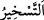

övülmeye lâyık olandır.
Ey Âdem oğulları “Allâh’ın, göklerde” bulunan güneş, ay ve diğer hareket eden
yıldızlar ve mukarreb melekleri, menfaatlerinizi ve istediklerinizi elde etme vâsıtaları
kılmak sûretiyle “sizin emrinize verdiğini görmediniz” bilmediniz “mi?”
“
” bir şeyi zorla belli bir maksada sevk etmek, yönlendirmektir. Yıldızların
emre verilmesi şöyledir: Allah Teâlâ onların her biri için bir yörünge tayin etmiş ve
bunları o yörüngeler üzerinde hareket ettirmektedir. Her biri için diğer gök cisimleriyle
bir kısım bağlar ve ilişkiler takdir etmiştir. Onların bir kısmını süflî âlemdeki kış, yaz,
sonbahar, ilkbahar gibi zamanla alâkalı işleri tanzimle; bir kısmını da madenler, bitkiler,
hayvanlar, insanlar gibi mekanla alâkalı işleri tanzimle vazifelendirmiştir. Hasılı yıldız
ve gezegenlerin devamlı bir şekilde hareket etmeleriyle çeşitli durumların ortaya
çıkması, insanların maslahat ve menfaatleri içindir.
Kâşifî der ki: “Gökyüzünde olanları sizin yararınıza itâatkâr kıldı. Sizler gökte
bulunan güneş ve ayın ışığından faydalanıyorsunuz.
Doğudan batıya ay ve güneşi yürüttü
Ve dünyâyı su üzerine yaydı.
Yıldızlar sayesinde de yolda yürürsünüz.” Nitekim Allah Teâlâ: “Onlar yıldızlarla
(gidecekleri) doğru istikâmeti bulurlar” (en-Nahl, 16/16) buyurur.
Meleklerin emre verilmesi şöyledir: Allah Teâlâ sonsuz kudretinin ve hikmetinin bir
gereği olarak meleklerden her bir grubu, yapılması gereken işlerin birine vekil ve ona
yardımcı kılmıştır. Bir kısmı güneş, ay, yıldızlar ve onların yörüngelerinden sorumludur.
Bir kısmı bulutlardan ve yağmurdan sorumludur. Haberde şöyle gelmiştir: “Her yağmur
damlasını emredilen yere indirmek üzere meleklerden bir melek görevlidir.” Bir kısmı
denizler, ovalar ve rüzgarlardan sorumludur. Bazı melekler insanların amellerini
yazarlar. Yine meleklerden, insanların önlerinde ve arkalarında Allâh’ın emriyle onları
koruyan takipçiler vardır. Hatta rahimler için bile melekler tayin edilmiş; erkeğin
menisi rahme düşünce melek onu sağ eliyle, kadının yumurtası düşünce de onu sol eliyle
alır ve Allah birleştirmesini emredince de onları birleştirir. Bu hususta Allah Teâlâ
şöyle buyurur: “Gerçekten biz insanı karışık bir nutfeden yaratmışızdır.” (el-İnsan,
76/2). Bunun dışında cennet ve cehennemle vazifeli melekler vardır. Bunların hepsi
insanın faydası ve menfaati içindir. Hatta cennet ve cehennem bile insanları korkutmak
ve ümitlendirmek için âmâde kılınmıştır. Nitekim insanlar, bu sebeple korku ve ümit
içinde Rablerine duâ ederler.
Aynı şekilde Allah size kalb semâlarında bulunan doğruluk, ihlas, tevekkül, yakîn,
sabır, şükür ve diğer kalbî ve rûhânî makamları, rabbânî mevhîbeleri âmâde kılmıştır.
Bunların âmâde kılınması, nasibi olanlara cezbe ile ulaşılan seyr ü sülûk yoluyla bu